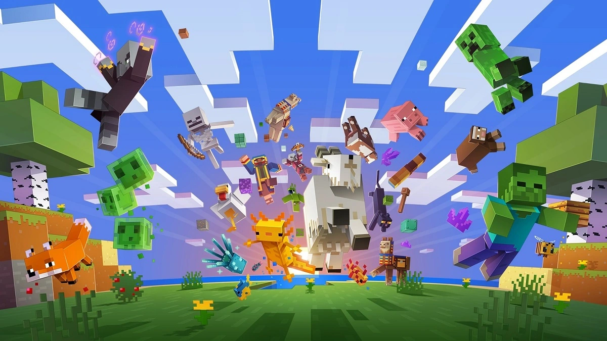
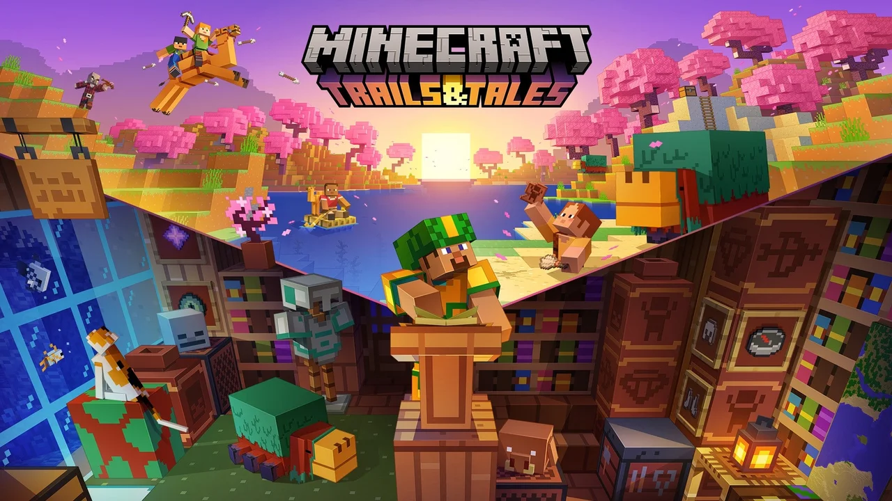
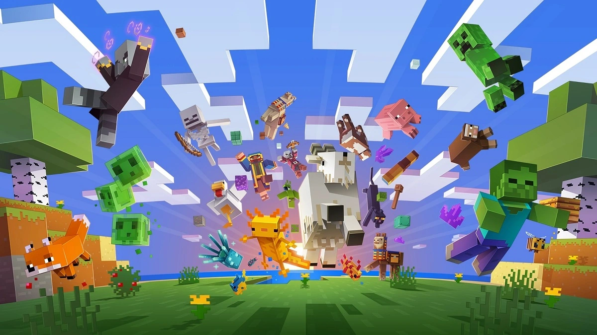
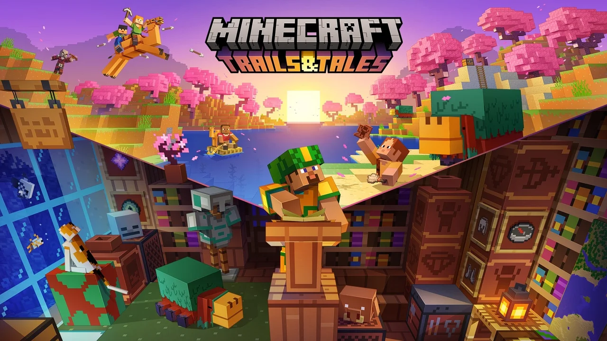
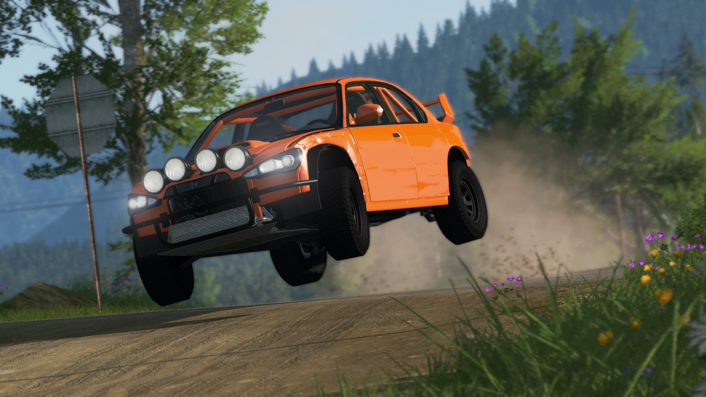
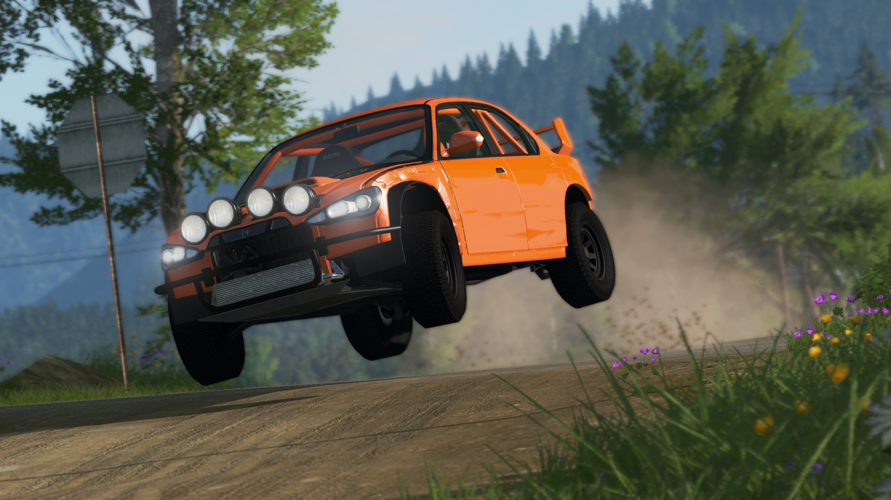

search
شروع فعالیت من و انتشار اولین ویدیوی من در آپارات در تاریخ 98/04/23 بود . بعد از آن در تاریخ9 مارس 2021 فعالیتم رو در یوتیوب آغاز کردم و در آنجا هم شروع به ویدیو قرار دادن کردم
import_contacts
من رضا هستم از کانال گیم لاو و در زمینه ی تولید محتوای ویدیویی فعالیت میکنم و در کانالم ویدیو هایی در مورد بازی های ویدیویی قرار میدهم
همان طور که گفتم موضوع ویدیو ها و کانال من بازی های ویدیویی هست . من بیشتر از بازی های ماین کرافت و بازی شبیه ساز تصادف ویدیو میسازم و در کانالم قرار میدهم.
شروع فعالیت من و انتشار اولین ویدیوی من در آپارات در تاریخ 98/04/23 بود . بعد از آن در تاریخ9 مارس 2021 فعالیتم رو در یوتیوب آغاز کردم و در آنجا هم شروع به ویدیو قرار دادن کردم
import_contacts
ماینکرفت یک سری بازی ویدئویی چندرسانهای است که بیشتر توسط استودیوی موجنگ ساخته شده و حول بازی ویدئوییای به همین نام است
. ماینکرفت اولین بار در ۱۷ مهٔ ۲۰۰۹ در دسترس عموم قرار گرفت. و در ۱۸ نوامبر ۲۰۱۱ به صورت کامل منتشر شد
بخش مورد علاقه من در ماین کرافت : ماین کرافت یک بازی است که درون خود هزاران بخش و بازی دیگر را جا داده . اما یک بخش از بخش های ماین کرافت که بازی مورد علاقه ی من هست بازی بدوارز هست .
بدوارز یک گیم مود ماینکرفت هست که در سرور ها بازی میشود.۳ حالت اصلی بدوارز ۴ نفره ۲ نفره و تک نفره هستند ولی در بعضی سرور ها حالت های بیشتری هم وجود دارد.در بدوارز توانایی های شما از جمله PVP و سرعت عملتان را به چالش کشیده میشود.

 



BeamNG.drive یک بازی ویدئویی شبیهسازی وسیله نقلیه است که توسط توسعهدهنده بازیهای ویدیویی مستقر در برمن، BeamNG GmbH ساخته و منتشر شده است. این بازی دارای فیزیک بدن نرم است که هندلینگ واقعی و آسیب رساندن به وسایل نقلیه را شبیه سازی می کند.
BeamNG.drive از فیزیک بدنه نرم برای شبیه سازی دینامیک خودرو و برخورد بین اشیا و وسایل نقلیه استفاده می کند. الگوریتم هایی برای انجام معادلات فیزیک نوشته شده است. این به شدت به کدنویسی در Lua متکی است و در حین اجرای بازی از بسته های داده محلی با استفاده از سیستم شبکه Lua استفاده می کند. موتور بازی به طور مداوم معادلات و مشکلات فیزیک را در زمان واقعی در طول بازی محاسبه می کند.
 
